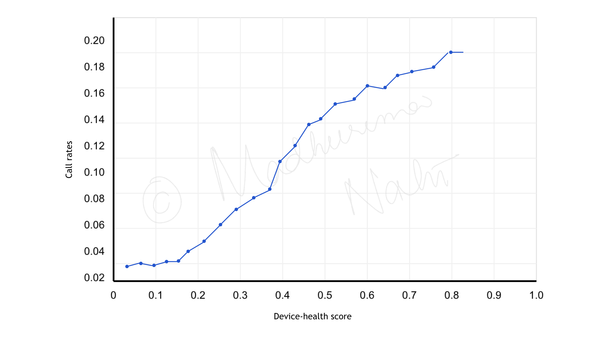

Device health scores &
network infrastructure maintenance
A statistical method based on device radio frequency (RF) metrics was developed
to improve the approach for network infrastructure maintenance,
for a telecommunications client facing escalating operational
costs from their reactive service visits.
The traditional approach relied on registering a service visit to
address to multiple customer complaints. This was not only expensive
but also damaged customer satisfaction through prolonged service disruptions.
A portion of operational expenses could be reduced if some
repeated service visits and support calls could be decreased
through proactive maintenance.
The proposed solution monitors the device health of customers
and proactively identifies possible at-risk network
infrastructure in a smaller geo-location within a region.
The methodology successfully flagged known
problematic nodes with high precision in one region of the USA,
confirming the approach's validity.
A comprehensive device health scoring algorithm was engineered using
the hourly data available for the key RF performance metrics:
signal-to-noise ratio (SNR)
downstream receiving power
upstream transmitting power
The device-health score plotted against six months of historical service visits
and call rates validated the correlation that a higher device-health score
leads to more calls and subsequently more service visits.
A schematic plot showing this relationship is shown below:

Device-health score calculation
To identify a reliable minimum and maximum thresholds
for each RF metric, required for standardisation,
the extreme values at both ends were excluded by
focusing on the 5th to 95th percentile range.
Each metric was standardised using the formula:
$S_i = \frac{|x_i - x_{min}|}{x_{max} - x_{min}}$ where
$x_i$ represented the hourly metric value from device data.
A weighted scoring formula transformed raw RF measurements
into actionable device-health scores.
The weight for each metric was determined by measuring the
slope of linear regression between call rates and the normalised metric,
represented as
$$w_i = \frac{\Delta\textit{call_rate}}{\Delta\textit{normalised_metric}_i}.$$
Finally, to effectively capture each metric's relative contribution
to service issues, the device-health score was calculated as
$$\text{device_health_score} = \sum_{i=1}^3 w_i \times S_i.$$
Geographical high-risk customers clustering
To find faulty infrastructure in a region, multiple clusters of
customers with high device-health score were identified
using the clustering algorithm,
DBSCAN or Density Based Spatial Clustering of Applications with Noise.
It groups data points based on how densely packed they are,
and can identify
clusters of various shapes and handle data with varying densities
(
SQL DBSCAN code reference).
DBSCAN was implemented to find clusters of a minimum of 10 customers
with a device-health score of at least 0.3 after tuning the following
parameters:
distance between the geometric points, e.g., distance between the
latitudes and longitudes of customers set to 500 metres.
minimum number of points in the cluster, e.g., a minimum
of 10 customers.
Note: 0.3 was chosen from the call rate vs device health score.
Custom SQL stored procedures were scheduled for daily execution to
continuously provide updated device-health profiles and
geographical concentrations of potential at-risk (high risk)
customers across the entire region.
Since the clusters of custoners with high device-health scores
covered a significant distance, it pointed to a faulty infrastructure
instead of individual device issues.
The continuous monitoring of such clusters enabled targeted maintenance of
problematic network nodes rather than addressing individual customer issues.
Extrapolation to the entire nation
After proving the concept, the findings were cautiously extrapolated
nationwide, accounting for regional variations in population density,
thereby changing the parameters of the clustering algorithm and the
thresholds for call rates.
The final production solution enabled the transformation from
reactive to proactive maintenance scheduling based on statistical device-health indicators.
Field operations teams received daily reports highlighting emerging high-device-health
clusters requiring preventive intervention, dramatically
shifting resource
allocation from emergency response to planned maintenance. This not only
reduced costs but improved network reliability metrics and customer
satisfaction scores by addressing potential failures before they
impacted service. The solution's ROI extended beyond direct cost
savings to include improved customer retention and reduced churn
in previously problematic service areas.